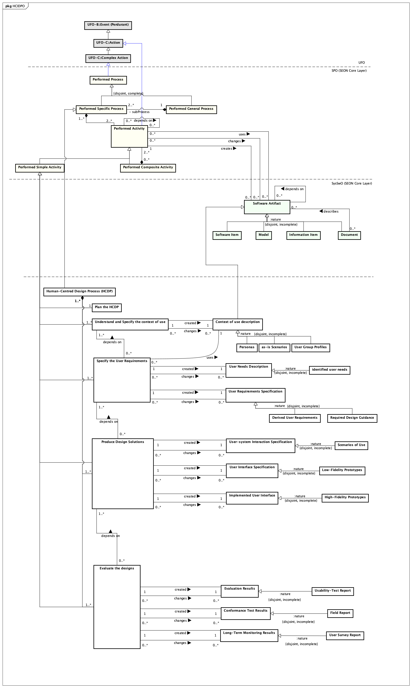

HCI-ON: Networked Ontology Specification
Human-Computer Interaction Design Process Ontology (HCIDPO)
1. Ontology Description
2. Related Ontologies
Networked ontologies used by HCIDPO:
| Ontology | Relation | Integration Level |
3. Ontology Models
Figure 1 presents the conceptual model of the HCIDPO.

Figure 1. HCIDPO conceptual model.
4. Concepts Definition
The following table shows the definitions for HCIDPO concepts.
Detailed Concepts
| Conformance Test Results |
HCIDPO::Conformance Test Results
Specializes
Relations:
Evaluate the designs (1..1) created (1..1) Conformance Test Results
Evaluate the designs (0..*) changes (0..*) Conformance Test Results
| Context of use description |
HCIDPO::Context of use description
Specializes SySwO::Software Artifact
Relations:
Understand and Specify the context of use (1..1) created (1..1) Context of use description
Understand and Specify the context of use (0..*) changes (0..*) Context of use description
Specify the User Requirements (0..*) uses (1..1) Context of use description
| Derived User Requirements |
HCIDPO::Derived User Requirements
Specializes HCIDPO::User Requirements Specification
| Evaluate the designs |
HCIDPO::Evaluate the designs
Specializes SPO::Performed Simple Activity
Relations:
Evaluate the designs (0..*) depends on (1..*) Produce Design Solutions
Evaluate the designs (0..*) changes (0..*) Evaluation Results
Evaluate the designs (1..1) created (1..1) Evaluation Results
Evaluate the designs (1..1) created (1..1) Conformance Test Results
Evaluate the designs (0..*) changes (0..*) Conformance Test Results
Evaluate the designs (0..*) changes (0..*) Long-Term Monitoring Results
Evaluate the designs (1..1) created (1..1) Long-Term Monitoring Results
Human-Centred Design Process (HCDP) (1..*) <>-- (1..*) Evaluate the designs
| Evaluation Results |
HCIDPO::Evaluation Results
Specializes
Relations:
Evaluate the designs (0..*) changes (0..*) Evaluation Results
Evaluate the designs (1..1) created (1..1) Evaluation Results
| Field Report |
HCIDPO::Field Report
Specializes HCIDPO::Conformance Test Results
| High-Fidelity Prototypes |
HCIDPO::High-Fidelity Prototypes
Specializes HCIDPO::Implemented User Interface
| Human-Centred Design Process (HCDP) |
HCIDPO::Human-Centred Design Process (HCDP)
Specializes SPO::Performed Specific Process
Relations:
Human-Centred Design Process (HCDP) (1..*) <>-- (1..1) Plan the HCDP
Human-Centred Design Process (HCDP) (1..*) <>-- (1..*) Understand and Specify the context of use
Human-Centred Design Process (HCDP) (1..*) <>-- (1..*) Specify the User Requirements
Human-Centred Design Process (HCDP) (1..*) <>-- (1..*) Produce Design Solutions
Human-Centred Design Process (HCDP) (1..*) <>-- (1..*) Evaluate the designs
| Implemented User Interface |
HCIDPO::Implemented User Interface
Specializes
Relations:
Produce Design Solutions (0..*) changes (0..*) Implemented User Interface
Produce Design Solutions (1..1) created (1..1) Implemented User Interface
| Long-Term Monitoring Results |
HCIDPO::Long-Term Monitoring Results
Specializes
Relations:
Evaluate the designs (0..*) changes (0..*) Long-Term Monitoring Results
Evaluate the designs (1..1) created (1..1) Long-Term Monitoring Results
| Low-Fidelity Prototypes |
HCIDPO::Low-Fidelity Prototypes
Specializes HCIDPO::User Interface Specification
| Personas |
HCIDPO::Personas
Specializes HCIDPO::Context of use description
| Plan the HCDP |
HCIDPO::Plan the HCDP
Specializes SPO::Performed Simple Activity
Relations:
Human-Centred Design Process (HCDP) (1..*) <>-- (1..1) Plan the HCDP
| Produce Design Solutions |
HCIDPO::Produce Design Solutions
Specializes SPO::Performed Simple Activity
Relations:
Produce Design Solutions (0..*) depends on (1..*) Specify the User Requirements
Produce Design Solutions (0..*) changes (0..*) User-system Interaction Specification
Produce Design Solutions (1..1) created (1..1) User-system Interaction Specification
Produce Design Solutions (0..*) changes (0..*) User Interface Specification
Produce Design Solutions (1..1) created (1..1) User Interface Specification
Produce Design Solutions (0..*) changes (0..*) Implemented User Interface
Produce Design Solutions (1..1) created (1..1) Implemented User Interface
Evaluate the designs (0..*) depends on (1..*) Produce Design Solutions
Human-Centred Design Process (HCDP) (1..*) <>-- (1..*) Produce Design Solutions
| Required Design Guidance |
HCIDPO::Required Design Guidance
Specializes HCIDPO::User Requirements Specification
| Scenarios of Use |
HCIDPO::Scenarios of Use
Specializes HCIDPO::User-system Interaction Specification
| Specify the User Requirements |
HCIDPO::Specify the User Requirements
Specializes SPO::Performed Simple Activity
Relations:
Specify the User Requirements (0..*) depends on (1..*) Understand and Specify the context of use
Specify the User Requirements (0..*) uses (1..1) Context of use description
Specify the User Requirements (0..*) changes (0..*) User Needs Description
Specify the User Requirements (1..1) created (1..1) User Needs Description
Specify the User Requirements (0..*) changes (0..*) User Requirements Specification
Specify the User Requirements (1..1) created (1..1) User Requirements Specification
Produce Design Solutions (0..*) depends on (1..*) Specify the User Requirements
Human-Centred Design Process (HCDP) (1..*) <>-- (1..*) Specify the User Requirements
| Understand and Specify the context of use |
HCIDPO::Understand and Specify the context of use
Specializes SPO::Performed Simple Activity
Relations:
Understand and Specify the context of use (1..1) created (1..1) Context of use description
Understand and Specify the context of use (0..*) changes (0..*) Context of use description
Human-Centred Design Process (HCDP) (1..*) <>-- (1..*) Understand and Specify the context of use
Specify the User Requirements (0..*) depends on (1..*) Understand and Specify the context of use
| Usability-Test Report |
HCIDPO::Usability-Test Report
Specializes HCIDPO::Evaluation Results
| User Group Profiles |
HCIDPO::User Group Profiles
Specializes HCIDPO::Context of use description
| User Interface Specification |
HCIDPO::User Interface Specification
Specializes
Relations:
Produce Design Solutions (0..*) changes (0..*) User Interface Specification
Produce Design Solutions (1..1) created (1..1) User Interface Specification
| User Needs Description |
HCIDPO::User Needs Description
Specializes
Relations:
Specify the User Requirements (0..*) changes (0..*) User Needs Description
Specify the User Requirements (1..1) created (1..1) User Needs Description
| User Requirements Specification |
HCIDPO::User Requirements Specification
Specializes
Relations:
Specify the User Requirements (0..*) changes (0..*) User Requirements Specification
Specify the User Requirements (1..1) created (1..1) User Requirements Specification
| User Survey Report |
HCIDPO::User Survey Report
Specializes HCIDPO::Long-Term Monitoring Results
| User-system Interaction Specification |
HCIDPO::User-system Interaction Specification
Specializes
Relations:
Produce Design Solutions (0..*) changes (0..*) User-system Interaction Specification
Produce Design Solutions (1..1) created (1..1) User-system Interaction Specification
| as-is Scenarios |
HCIDPO::as-is Scenarios
Specializes HCIDPO::Context of use description
| identified user needs |
HCIDPO::identified user needs
Specializes HCIDPO::User Needs Description
Human-Computer Interaction Design Process Ontology (HCIDPO)
Sat Nov 13 13:05:01 BRT 2021